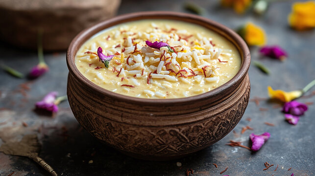

Ingredients for Payasam 🍨
- 1/2 cup Rice (preferably Basmati or any short-grain rice) 🍚
- 4 cups Full Cream Milk 🥛
- 1/2 cup Sugar 🍯
- 1/4 tsp Cardamom Powder 🌿
- 1 tbsp Ghee (clarified butter) 🧈
- 10-12 Cashews 🌰
- 10-12 Almonds 🌰
- 10-12 Raisins 🍇
- 1/2 tsp Saffron strands (optional, for color and flavor) 🌼
- 1 tbsp Water 💧
Steps 🍴
- Rinse the rice thoroughly and soak it in water for about 15 minutes. 🍚💧
- In a large pan, heat ghee over medium heat. Add the cashews, almonds, and raisins. Fry them until golden brown. Remove them from the pan and set them aside for later. 🌰🍇🧈
- In the same pan, add the soaked rice and sauté it for a couple of minutes in the remaining ghee. 🍚🧈
- Now, add the milk to the rice and bring it to a boil. Stir occasionally to prevent the milk from sticking to the bottom. 🥛🍚
- Once the milk begins to boil, lower the heat and simmer the mixture. Cook for 15-20 minutes, stirring regularly, until the rice softens and the mixture thickens. 🥛🍚
- Add sugar to the cooked rice and milk mixture. Stir until the sugar dissolves completely. 🍯
- Add the cardamom powder and mix well. 🌿
- If using saffron, soak the saffron strands in 1 tablespoon of warm water and add it to the payasam. Stir to infuse the saffron flavor and color. 🌼💧
- Continue to simmer for another 5 minutes, allowing the flavors to blend and the payasam to thicken to your desired consistency. 🍚🥛
- Once the payasam reaches a creamy consistency, remove it from the heat. 🍨
- Garnish with the fried cashews, almonds, and raisins. Serve hot or chilled, based on your preference! 🌰🍇